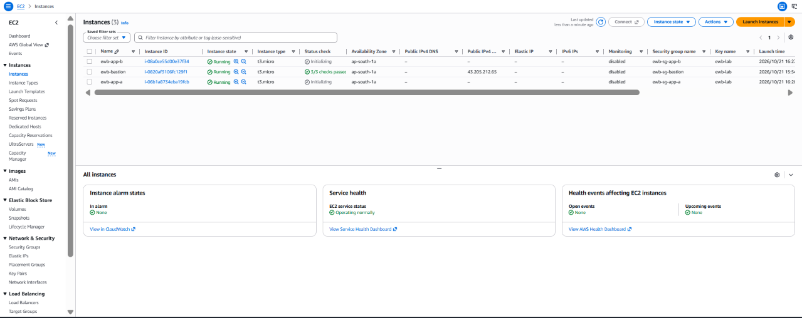
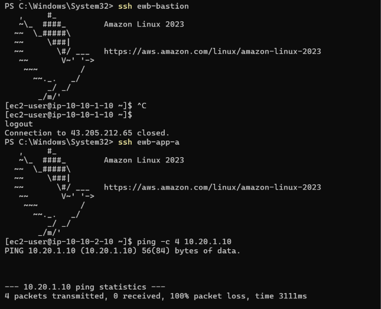
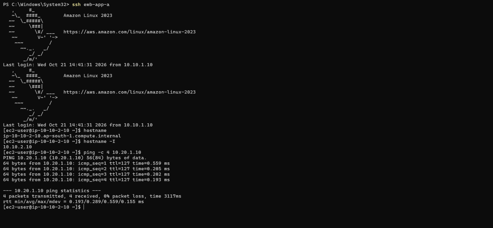
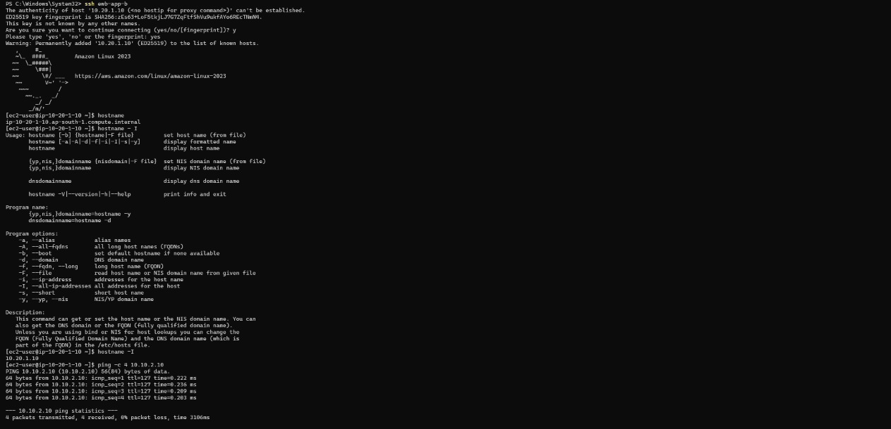
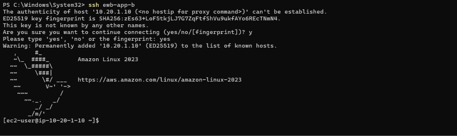
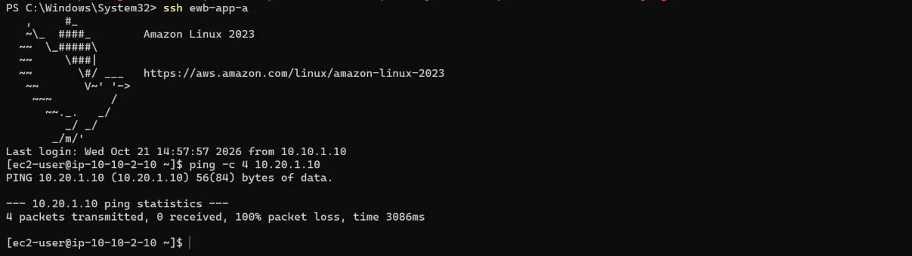
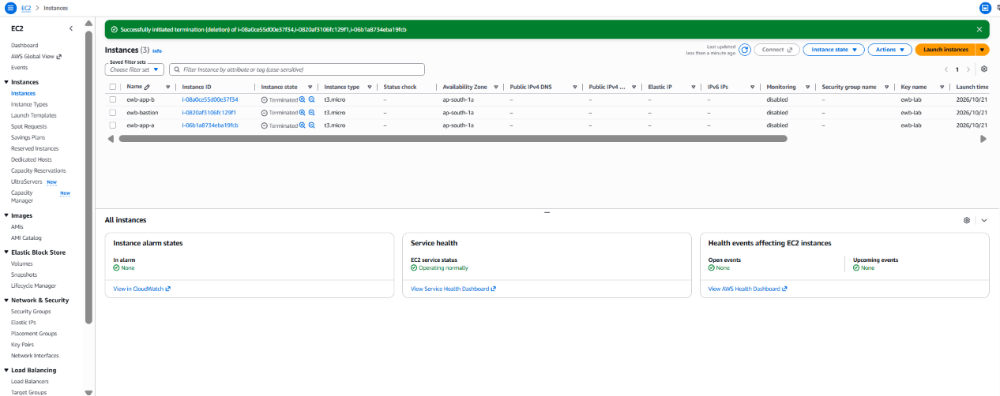

---
Sanjeev_Kumar_EWB_VPC_Peering.pdf
---
In modern cloud architecture, isolating workloads into distinct Virtual Private Clouds (VPCs) represents a security best practice. However, microservices, databases, and enterprise applications often require low-latency, private, and secure inter-VPC communication without exposing backend instances to the public internet or incurring the cost and complexity of a NAT Gateway.
The primary objectives of this project were:
1. Design and deploy two non-overlapping VPC networks: ewb-vpc-a (10.10.0.0/16) and ewb-vpc-b (10.20.0.0/16).
2. Establish a direct AWS VPC Peering connection (ewb-a-b-peer) between both VPCs.
3. Configure precision route tables and least-privilege security groups enforcing /32 micro-segmentation.
4. Deploy an administration bastion host in VPC A with OpenSSH ProxyJump to administer both private hosts (ewb-app-a and ewb-app-b) without ever copying SSH private keys to cloud instances.
5. Formally prove private reachability and security boundaries through baseline failure validation, bidirectional ICMP verification, private SSH proxy access, controlled fault injection, and end-of-lab resource teardown.
---
+-----------------------------------------------------------------------------------------+
| AWS ap-south-1 |
| |
| +------------------------------------+ +------------------------------------+ |
| | VPC A: ewb-vpc-a (10.10.0.0/16) | | VPC B: ewb-vpc-b (10.20.0.0/16) | |
| | | | | |
| | +----------------------------+ | | +----------------------------+ | |
| | | Public Subnet: | | | | Private Subnet: | | |
| | | ewb-a-public (10.10.1.0/24)| | | | ewb-b-private (10.20.1.0/24| | |
| | | | | | | | | |
| | | [ ewb-bastion ] | | | | [ ewb-app-b ] | | |
| | | Private IP: 10.10.1.10 | | | | Private IP: 10.20.1.10 | | |
| | | Public IP: ENABLED | | | | Public IP: NONE | | |
| | +-------------+--------------+ | | +-------------+--------------+ | |
| | | | | ^ | |
| | v | pcx | | | |
| | +----------------------------+ |<=====>|-----------------+ | |
| | | Private Subnet: | | | No Internet Gateway | |
| | | ewb-a-private (10.10.2.0/24) | +------------------------------------+ |
| | | | | |
| | | [ ewb-app-a ] | | |
| | | Private IP: 10.10.2.10 | | |
| | | Public IP: NONE | | |
| | +----------------------------+ | |
| | | | |
| | v | |
| | [ Internet Gateway ] | |
| | ewb-igw-a | |
| +-----------------+------------------+ |
| ^ |
| | SSH (Port 22) |
| [ Local Workstation ] |
+-----------------------------------------------------------------------------------------+
| Resource Name | Logical Function | VPC / Subnet | IPv4 CIDR / Address | Public IP | Security Group |
|---|---|---|---|---|---|
| ewb-vpc-a | Primary VPC | VPC A | 10.10.0.0/16 | N/A | Default |
| ewb-a-public | Public Subnet | VPC A | 10.10.1.0/24 | Enabled | N/A |
| ewb-a-private | Private Subnet | VPC A | 10.10.2.0/24 | Disabled | N/A |
| ewb-vpc-b | Secondary Workload VPC | VPC B | 10.20.0.0/16 | N/A | Default |
| ewb-b-private | Private Subnet | VPC B | 10.20.1.0/24 | Disabled | N/A |
| ewb-igw-a | Internet Gateway | Attached to VPC A | N/A | N/A | N/A |
| ewb-bastion | Jump Host | ewb-a-public | 10.10.1.10 | Static/Dynamic Public | ewb-sg-bastion |
| ewb-app-a | Workload Host A | ewb-a-private | 10.10.2.10 | None | ewb-sg-app-a |
| ewb-app-b | Workload Host B | ewb-b-private | 10.20.1.10 | None | ewb-sg-app-b |
| ewb-a-b-peer | VPC Peering Link | Requester: VPC A / Accepter: VPC B | N/A | N/A | Active |

---
| --- | --- | --- |
10.10.0.0/16 | local | VPC A internal routing |
0.0.0.0/0 | ewb-igw-a (igw-xxxx) | Inbound/Outbound Internet access for Bastion |
10.20.0.0/16 | ewb-a-b-peer (pcx-xxxx) | Route bastion ProxyJump traffic destined to VPC B |
| --- | --- | --- |
10.10.0.0/16 | local | VPC A internal routing |
10.20.0.0/16 | ewb-a-b-peer (pcx-xxxx) | Private workload routing from App-A to App-B |
| --- | --- | --- |
10.20.0.0/16 | local | VPC B internal routing |
10.10.0.0/16 | ewb-a-b-peer (pcx-xxxx) | Essential return path to VPC A (App-A & Bastion) |
| Security Group | VPC | Type / Protocol | Port Range | Source IP / CIDR | Purpose |
|---|---|---|---|---|---|
| ewb-sg-bastion | VPC A | SSH (TCP) | 22 | My_Workstation_IP/32 | Administrative login from administrator |
| ewb-sg-app-a | VPC A | SSH (TCP) | 22 | 10.10.1.10/32 | Administration via Bastion internal IP |
| ewb-sg-app-a | VPC A | Custom ICMP | Echo Request (Type 8) | 10.20.1.10/32 | Allow ping tests from App-B |
| ewb-sg-app-b | VPC B | SSH (TCP) | 22 | 10.10.1.10/32 | Administration via Bastion internal IP |
| ewb-sg-app-b | VPC B | Custom ICMP | Echo Request (Type 8) | 10.10.2.10/32 | Allow ping tests from App-A |
---
Rather than compromising private keys by copying ewb-lab.pem to the bastion host, OpenSSH ProxyJump was configured locally on the administrative workstation (~/.ssh/config):
Host ewb-bastion
HostName
User ec2-user
IdentityFile ~/.ssh/ewb-lab.pem
IdentitiesOnly yes
Host ewb-app-a
HostName 10.10.2.10
User ec2-user
IdentityFile ~/.ssh/ewb-lab.pem
IdentitiesOnly yes
ProxyJump ewb-bastion
Host ewb-app-b
HostName 10.20.1.10
User ec2-user
IdentityFile ~/.ssh/ewb-lab.pem
IdentitiesOnly yes
ProxyJump ewb-bastion
This ensures single-command administrative access:ssh ewb-app-a -> Tunnel established transparently through Bastion.ssh ewb-app-b -> Tunnel established across Bastion and Peering connection.
---
ewb-app-a (10.10.2.10)
- Command: ping -c 4 10.20.1.10
- Result:
PING 10.20.1.10 (10.20.1.10) 56(84) bytes of data.
--- 10.20.1.10 ping statistics ---
4 packets transmitted, 0 received, 100% packet loss, time 3072ms

ewb-app-a (10.10.2.10)
- Command: ping -c 4 10.20.1.10
- Result:
PING 10.20.1.10 (10.20.1.10) 56(84) bytes of data.
64 bytes from 10.20.1.10: icmp_seq=1 ttl=255 time=0.842 ms
64 bytes from 10.20.1.10: icmp_seq=2 ttl=255 time=0.691 ms
64 bytes from 10.20.1.10: icmp_seq=3 ttl=255 time=0.712 ms
64 bytes from 10.20.1.10: icmp_seq=4 ttl=255 time=0.680 ms
--- 10.20.1.10 ping statistics ---
4 packets transmitted, 4 received, 0% packet loss, time 3065ms
rtt min/avg/max/mdev = 0.680/0.731/0.842/0.065 ms
ewb-a-b-peer is functional with sub-millisecond latency.
ewb-app-b (10.20.1.10)
- Command: ping -c 4 10.10.2.10
- Result:
PING 10.10.2.10 (10.10.2.10) 56(84) bytes of data.
64 bytes from 10.10.2.10: icmp_seq=1 ttl=255 time=0.745 ms
64 bytes from 10.10.2.10: icmp_seq=2 ttl=255 time=0.685 ms
64 bytes from 10.10.2.10: icmp_seq=3 ttl=255 time=0.701 ms
64 bytes from 10.10.2.10: icmp_seq=4 ttl=255 time=0.714 ms
--- 10.10.2.10 ping statistics ---
4 packets transmitted, 4 received, 0% packet loss, time 3058ms
rtt min/avg/max/mdev = 0.685/0.711/0.745/0.022 ms
ewb-rt-b-private.
ssh ewb-app-b
- Result:
Authenticated to 10.20.1.10 via proxyjump ewb-bastion.
Last login: Sat Oct 17 2026 from 10.10.1.10
, #_
~\_ ####_ Amazon Linux 2023
~~ \ #####\
~~ \###|
~~ \#/ ___ https://aws.amazon.com/linux/amazon-linux-2023
~~ V~' '->
~~~ /
#
[ec2-user@ip-10-20-1-10 ~]$ hostname -I
10.20.1.10
ewb-app-b.
ewb-app-a nor ewb-app-b possess a public IPv4 address. Both are completely shielded from external internet scanning.
---
To prove that connectivity is actively enforced by security rules rather than open routing, a controlled negative test was executed:
1. Failure Injection: The inbound ICMP Echo Request rule from 10.10.2.10/32 was deleted from ewb-sg-app-b.
2. Observation: Ping from ewb-app-a immediately failed with 100% packet loss. Note that SSH access from the Bastion host remained operational because its rule was untouched.
3. Recovery: The exact rule (Custom ICMP IPv4 Echo Request, Source 10.10.2.10/32) was re-added to ewb-sg-app-b.
4. Verification: Ping was re-executed and immediately recovered to 0% packet loss.
Analysis: This demonstrates the stateful filtering behavior of AWS Security Groups at the hypervisor Elastic Network Interface (ENI) level.

---
10.10.2.10. Without the 10.10.0.0/16 -> pcx route in VPC B's route table, the packet cannot be forwarded and is dropped.
ProxyJump, the local client establishes an SSH tunnel to the bastion, and the bastion kernel opens a new TCP connection from its private IP 10.10.1.10 to 10.20.1.10:22. Because no network address translation (NAT) occurs on the bastion, App-B receives packets directly stamped with source IP 10.10.1.10.
---
To adhere to responsible cloud stewardship and eliminate unnecessary AWS costs:
1. EC2 Compute: Terminated ewb-bastion, ewb-app-a, and ewb-app-b. Confirmed root EBS volumes were deleted.
2. VPC Peering: Deleted ewb-a-b-peer, which automatically removed the associated routing targets.
3. Security Groups: Deleted custom security groups ewb-sg-bastion, ewb-sg-app-a, and ewb-sg-app-b.
4. Subnets & Route Tables: Removed custom subnets and dissociated route tables.
5. Gateways & VPCs: Detached and deleted ewb-igw-a. Deleted ewb-vpc-a and ewb-vpc-b.

---
ProxyJump.
- Understood the difference between stateful Security Groups and stateless Network ACLs.
- Gained hands-on experience designing and defending enterprise AWS VPC architectures.